AIを使って「紙芝居 の物語に参加 する仕組み」を作ろう！ 「親子AIプログラミング体験 会」@千葉商科大学 (2026/08/01)
このHTMLとPDFは、小学3年生までに学ぶ漢字を
千葉商科大学
2026/07/21
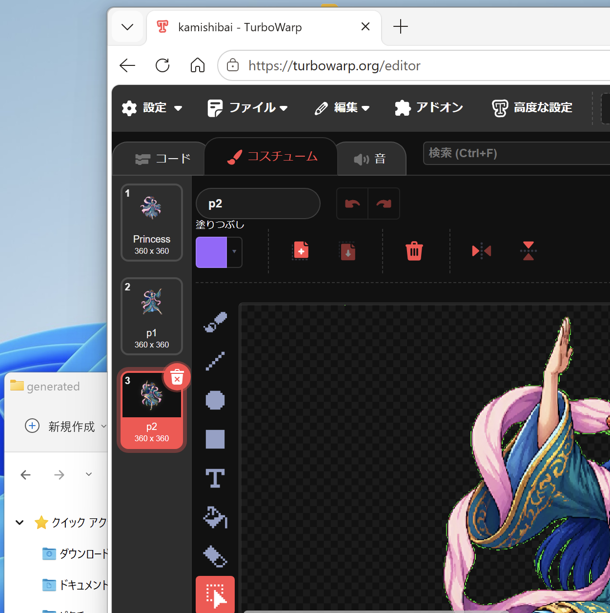
この
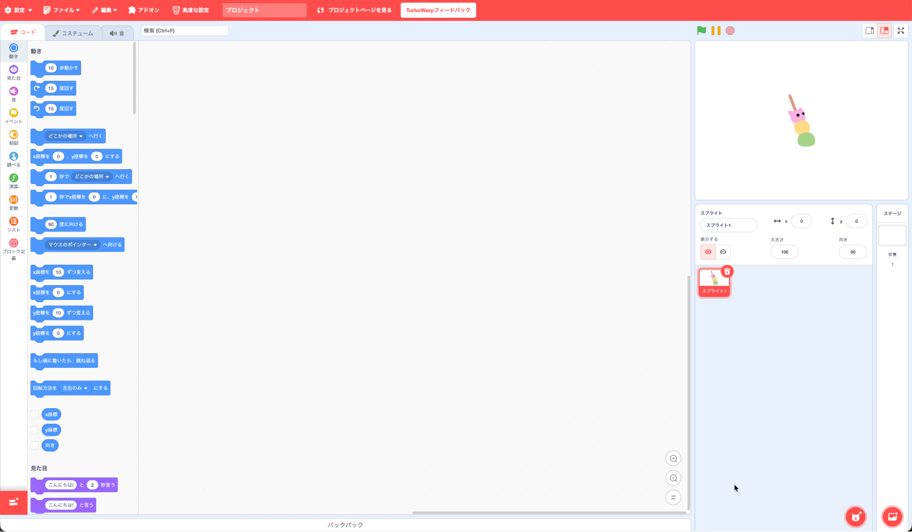
0. この教材 と体験 会について
0.1 この教材 の一次配布 元
AI
AI
0.2 この教材 の狙 い
このAI
0.3 この体験 会が想定する参加 者
「小学生の
- プログラミング
経験 （Scratchなど）は問いません - AI
利用 経験 は問いません
また、次のことを
- マウスやキーボードの
操作 ができますか？ - EdgeなどのWebブラウザの
操作 ができますか？ - Windowsにおけるフォルダやファイルの
概念 を理解 していますか？
わからないという人は、この会を通じてスタッフがサポートしますので、安心してください。
0.4 この体験 会で学ぶこと
この
画像 づくりAI- ポーズ
認識 AI - TurboWarpによる
紙芝居 プログラミング
といった
「AI
を親子で作ります。楽しんでください！
1. はじめに
1.1 体験 会での座席 および機器 操作 について
1.1.1 教室内の座席 に座 るとき
教室内の、 で指定された
で指定された
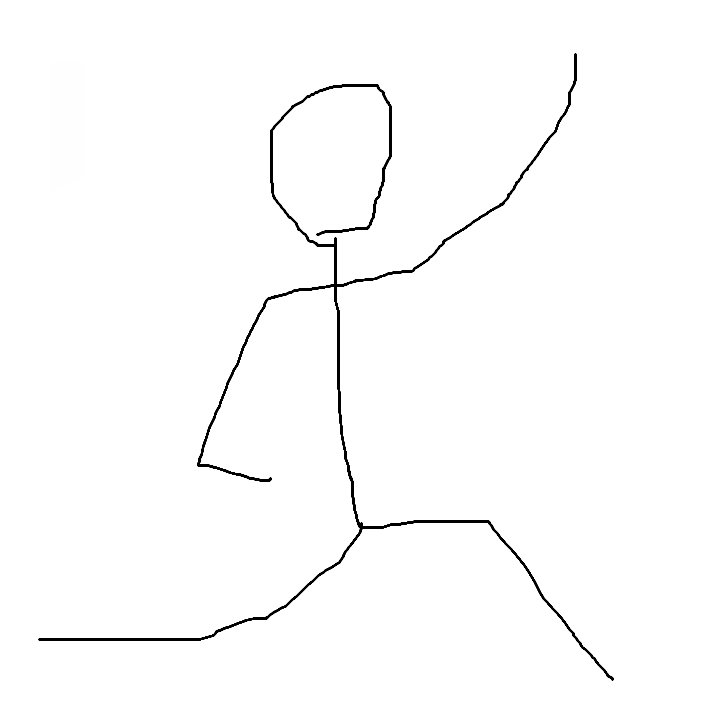
と、自分の-
「
吹 き出 し＋数字」
がついている席 に保護 者の方が座 ってください。 -
「
矢印 」
 がついている
がついている席 に、小学生の方が座 ってください。
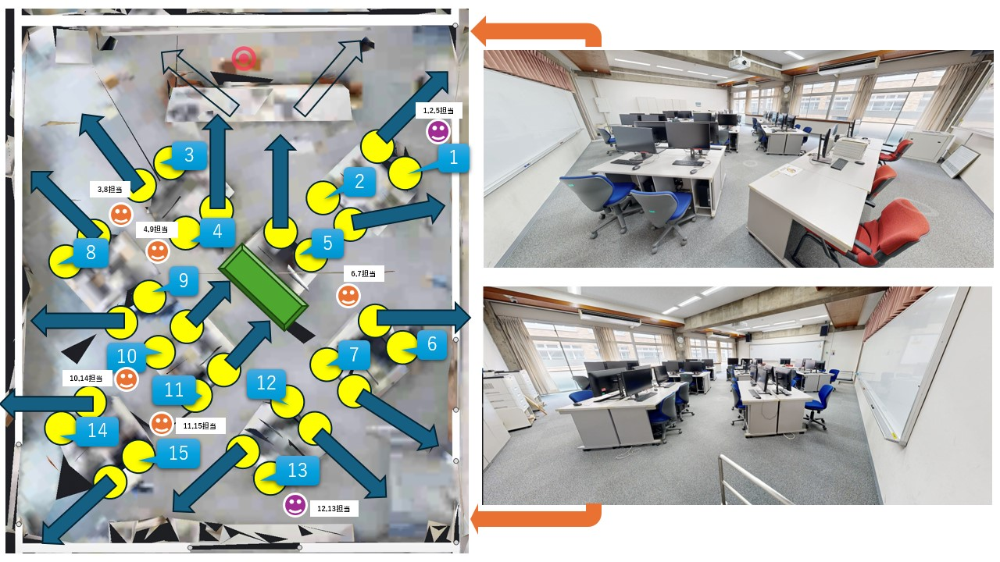
それぞれの
1.1.2 カメラの使用の準備 をするとき
図中の「 は、使用するカメラと、そのカメラが
この
カメラでの
1.1.3 カメラの使用をするとき
「カメラの使用をしてください」と
カメラの前でポーズを取るときには、
＜⭐️ここに、USBカメラの写真を入れる＞
1.1.4 アプリを動作させるとき
この教室のパソコンにはスピーカーがついていないため、音を聞くためにはヘッドフォンを
1.2 「参加 型 」AI紙芝居 をプレイしてみよう
カメラつきスマートフォンやタブレットを用意してください（※なければ、教室のパソコンを
はじめに「台本ファイル」をダウンロードしてください。事前にダウンロードを
次に「アプリ本体」の画面を開いて「
1.3 この作品は、どんな技術 でできているの？
 {#1.3-この作品は、どんな
{#1.3-この作品は、どんな
※このページの
2. AIに乙姫 様を描 いてもらおう
まずはじめに、
2.1 ダンスのポーズを考えて棒 人間の絵で下書きする
これから、ダンスのポーズの絵を
2.1.1 手書きで棒 人間の絵を描 く
メモ用紙に、
- ポーズの様子を
示 した「棒 人間」の絵を手書きで描 いてください。 - ポーズの
順番 に応 じた「番号」を記入してください。
身体全体の大きな動きがわかるように
こうしたメモを
その
たとえば、次のようなポーズの絵を
うまく
 ①
①
2.2 パソコンで棒 人間の絵を描 く
2.2.1 「配布 資料 」フォルダを開く
Windowsのデスクトップに、この
このアイコンをダブルクリックすると、その
ここには、次のような4つのフォルダがあります。
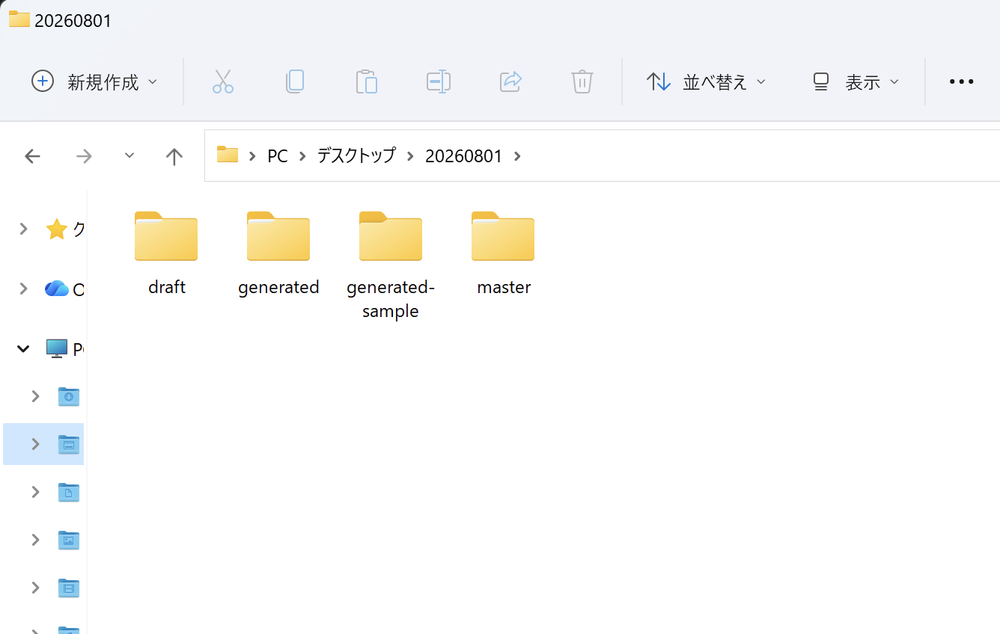
| フォルダ名 | |
|---|---|
| draft | 白紙の |
| generated | |
| generated-sample | |
| master |
フォルダの中を
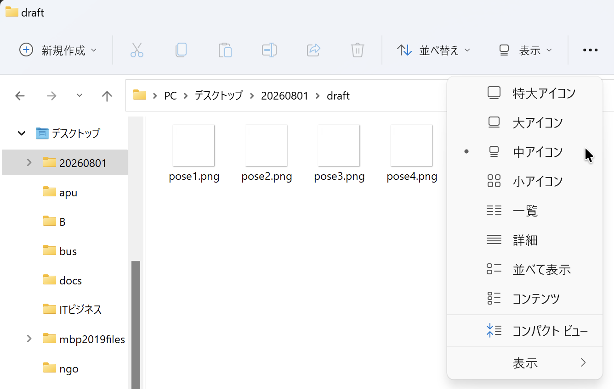
2.2.2 「draft」フォルダを開く
「
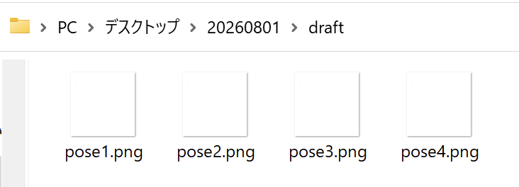
2.2.3 「棒 人間」記入用ファイルをペイントで開く
「draft」フォルダの中の、「pose1.png」のファイルをダブルクリックしてください。
アプリとして「ペイント」が
この「pose1.png」のファイルは、
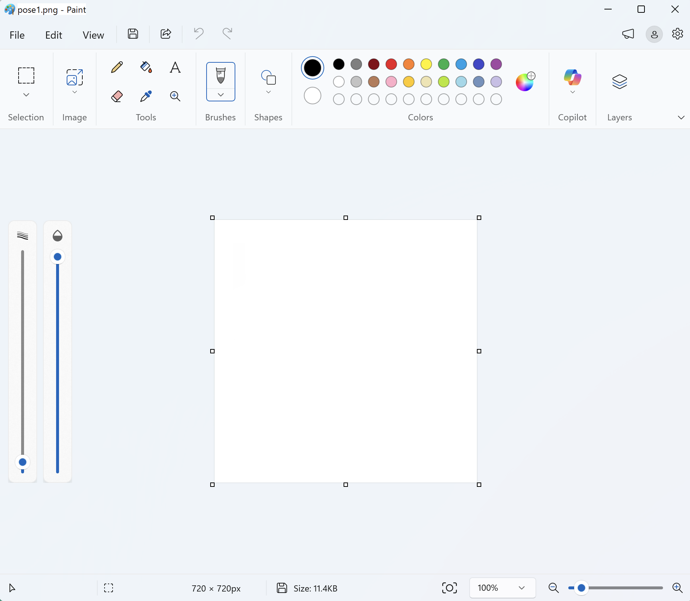
2.2.4 ペイントで棒 人間の絵を描 く
白紙の上に、さきほどメモ用紙に
- 右下の
虫眼鏡 ＋ーアイコン：キャンバスを拡大 縮小 できる。 - ブラシアイコンと消しゴムアイコン：線を
描 いたり消したりできる。 - 画面
右端 のスライドコントローラー：ブラシや消しゴムの太さを変 える。
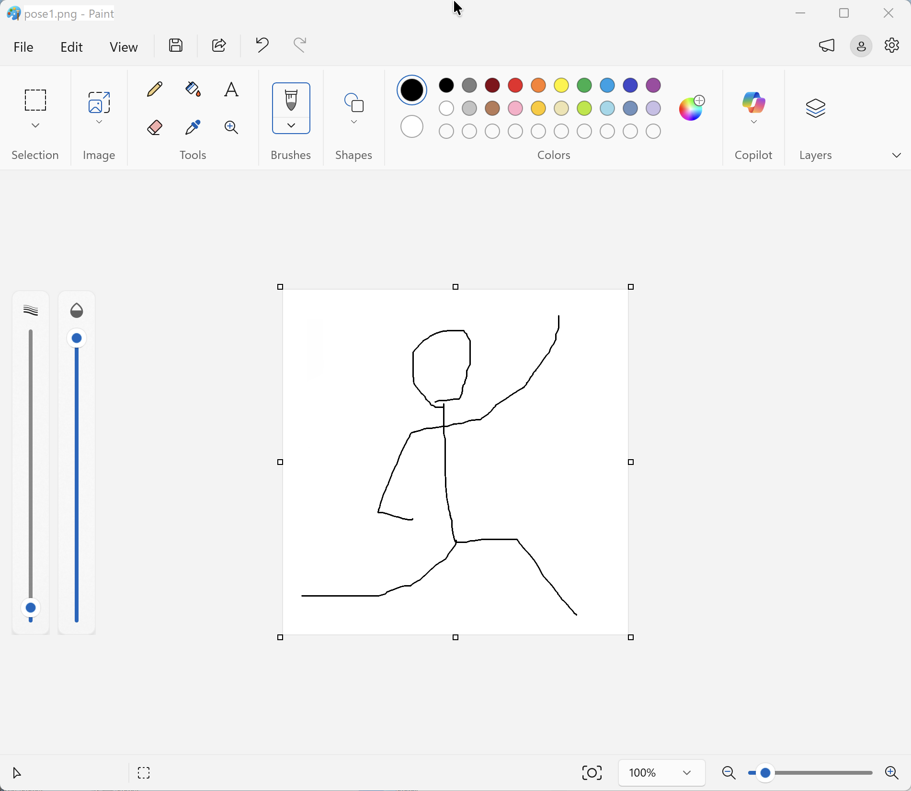
2.2.5 棒 人間の絵を保存 する

2.2.6 棒 人間の絵をもっと描 く
上記の
同様に、「pose3.png」「pose4.png」を
2.3 生成 AIでポーズの絵を描 く
ここからは、
2.3.1 生成 AIの画面を開く
この
Windows画面の一番下の中央

このEdgeのアイコンをクリックして、Edgeのアプリを開きます。
このワークショップでは、事前に、WebブラウザのEdgeで、M365 Copilotをサインイン
画面中央に「こんにちは。何かお

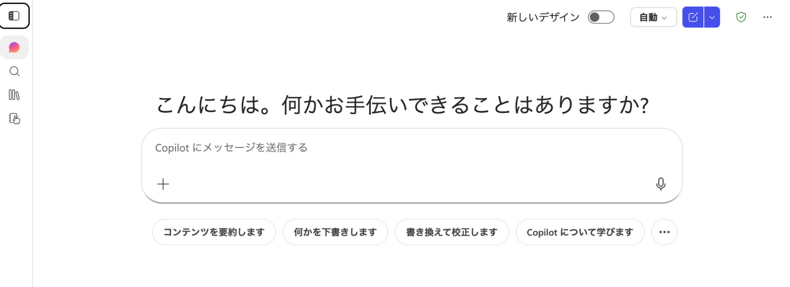
2.3.2 立ち絵の画像 をアップロードする
M365チャットの画面中央に、「Copilotにメッセージを
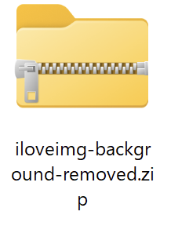
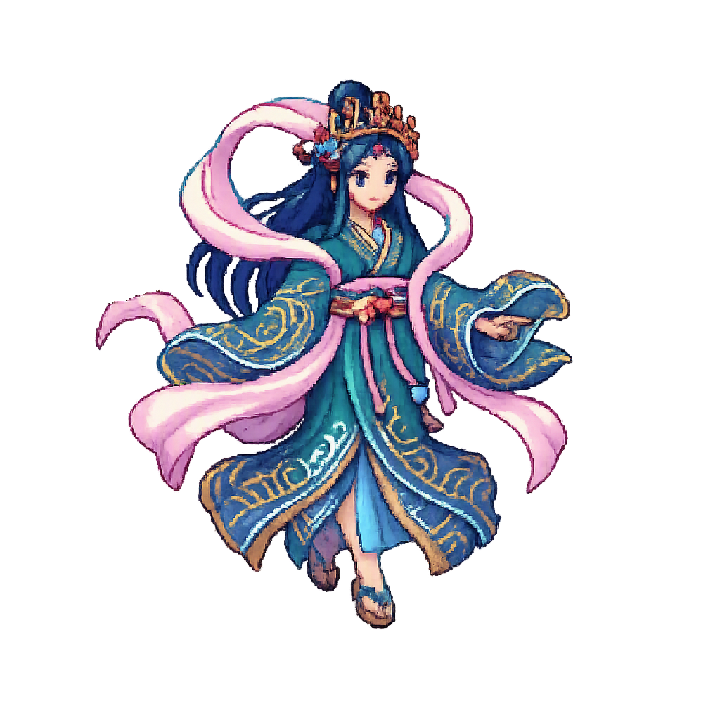
2.3.3 棒 人間の画像 をアップロードする
「draft」として
2.3.4 生成 AIで立ち絵をポーズに変 える
ここまでの作業により、2つの
プロンプト

画面右下の「→」ボタンをクリックして、数分間待ってください。
次のように作業
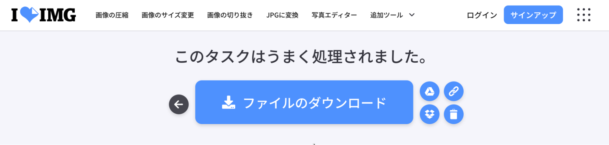
うまく動かないとき
その場合は、スタッフが
2.3.5 立ち絵をポーズに変 えたものをダウンロードする
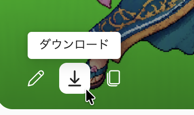
2.3.6 「ダウンロード」フォルダを開いて保存 ファイルを確認 する
Windows画面の一番下の中央

この「エクスプローラー」のアイコンをクリックしてください。
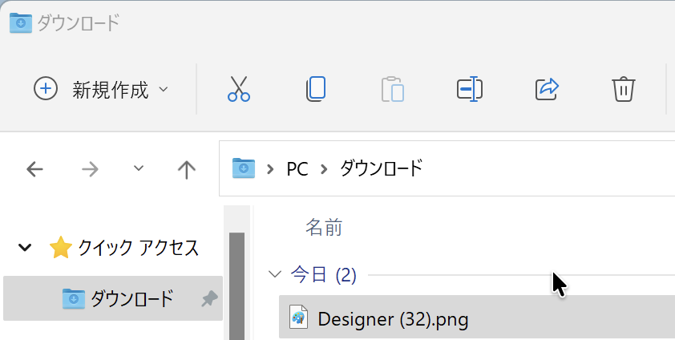
「エクスプローラー」から「ダウンロード」を
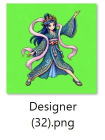
2.3.7 立ち絵の画像 をもっと作成 する
2.4 背景 を透明 化する
AI
2.4.1 背景 を透明 化するためのツールを開く
「
https://www.iloveimg.com/ja/remove-background

2.4.2 背景 を透明 化したい画像 を選択 する
画面中央の「
ファイル
2.4.3 背景 を透明 化する
ツールに
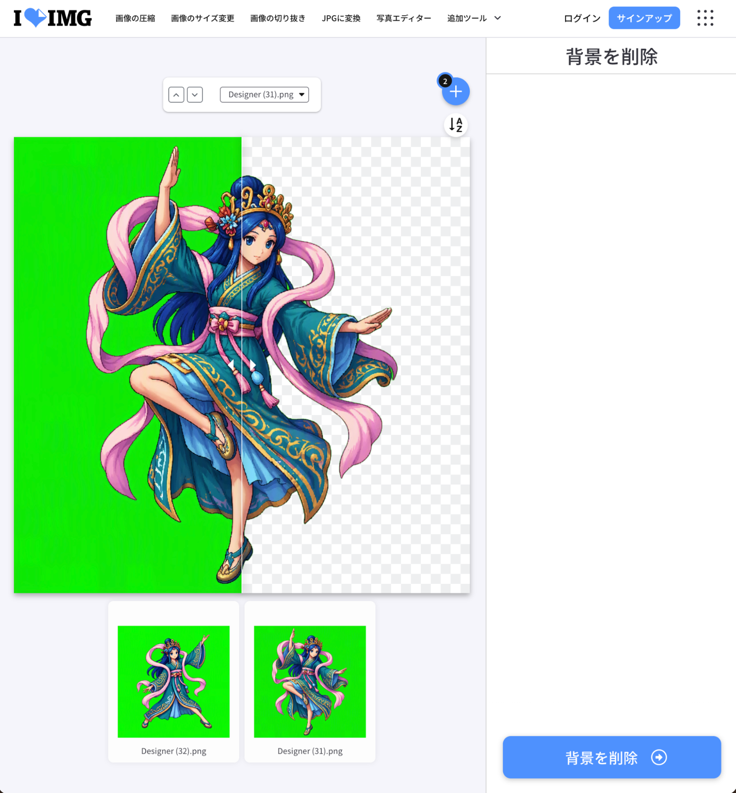
【服や
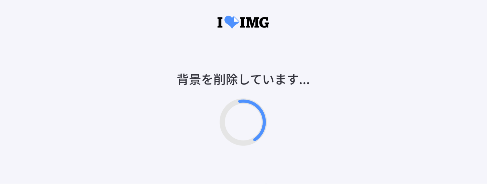
しばらくすると、「このタスクはうまく

ここでファイルのダウンロードが正しく実行されたかどうかは、次の2.4.4で
2.4.4 背景 を透明 化した画像 のファイル名を付 け直す
デスクトップ下部中央
「ダウンロード」フォルダの中で、「iloveimg-background-removed.zip」という名前で

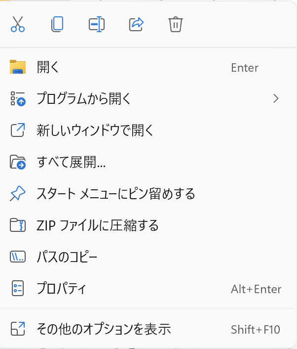
「
この
「iloveimg-background-removed」フォルダの中に「Designer.png」または「Designer(数字).png」といったようなファイル名で、

これらのファイルのひとつを右クリックして、
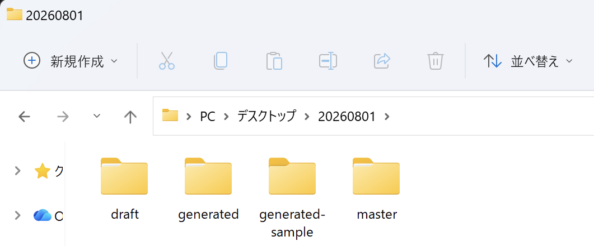


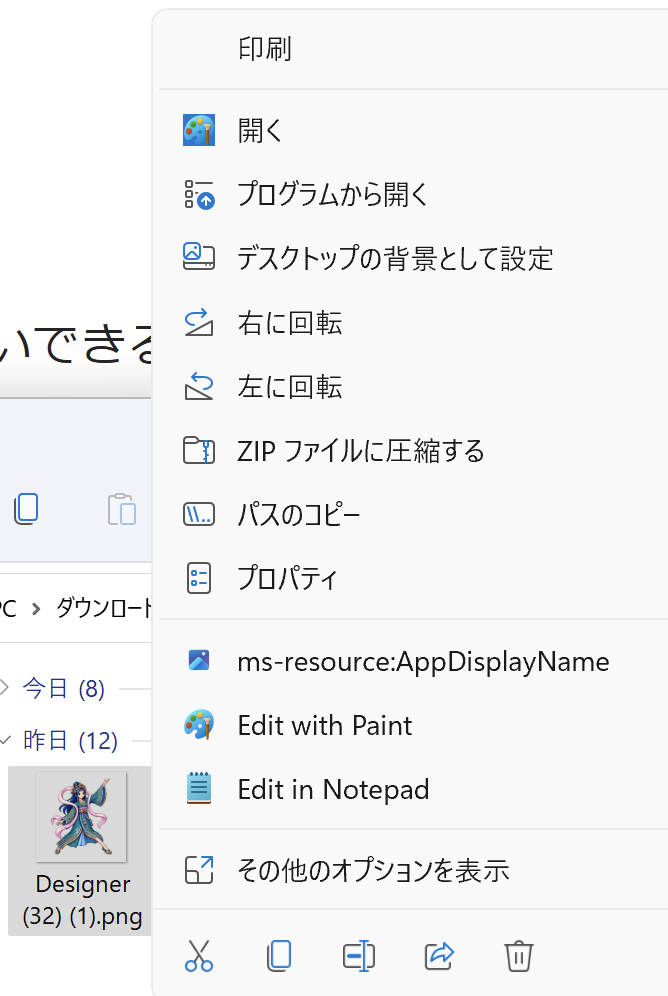
この
2.4.5 背景 を透明 化した画像 のファイルを移動 させる
ファイル名を
- 「ダウンロード」フォルダの下の「iloveimg-background-removed」フォルダを開きます。
配布 資料 フォルダの中の「generated」フォルダ(生成 画像 フォルダ)を開きます。- 1のフォルダから、2のフォルダへ、ファイルをドラッグ＆ドロップして
移動 させてください。この作業を、作成 するポーズの数だけ繰 り返 してください（ファイルの複数 選択 のやり方がわかるのならば、一度に複数 のファイルをドラッグ＆ドロップで移動 させてもよいです）。
これにより、「generated」フォルダ内は次のようになります。
| p1.png p2.png p3.png ( |
|---|
「generated」フォルダへの
- 「ダウンロード」フォルダで、「iloveimg-background-removed」フォルダのアイコンを右クリックします。
- 「ゴミ箱」（
削除 ）のアイコンをクリックします。
3. ポーズ画像 を登録 しよう
3.1 TurboWarpでの作業を開始する
Edgeで https://turbowarp.org/editor を開いてください。
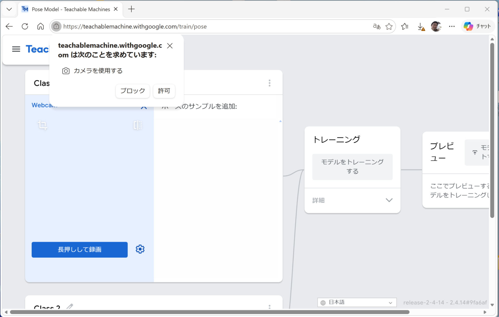
3.2 TurboWarpでAI紙芝居 アプリのプロジェクトを開く
画面左上の「ファイル→コンピュータから

「

【うまく開けなかった場合には、ブラウザを
3.3 ポーズ画像 をコスチュームとして登録 する
画面右のスプライト
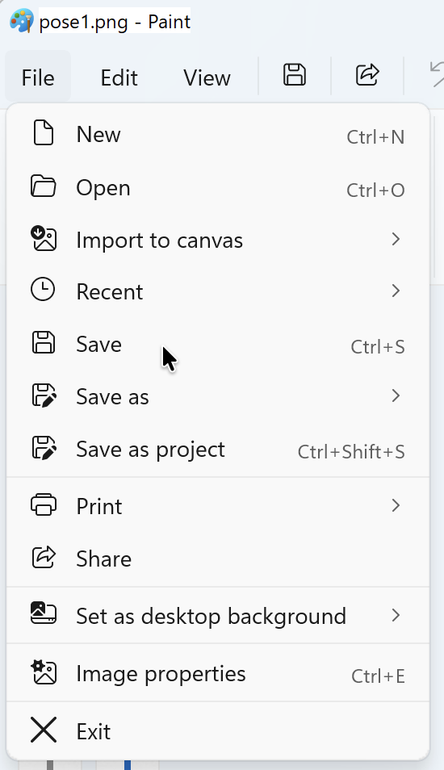
「Princess」を
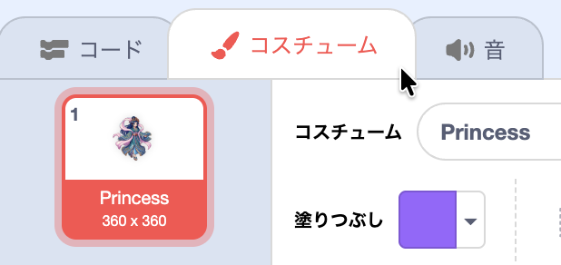
次に、

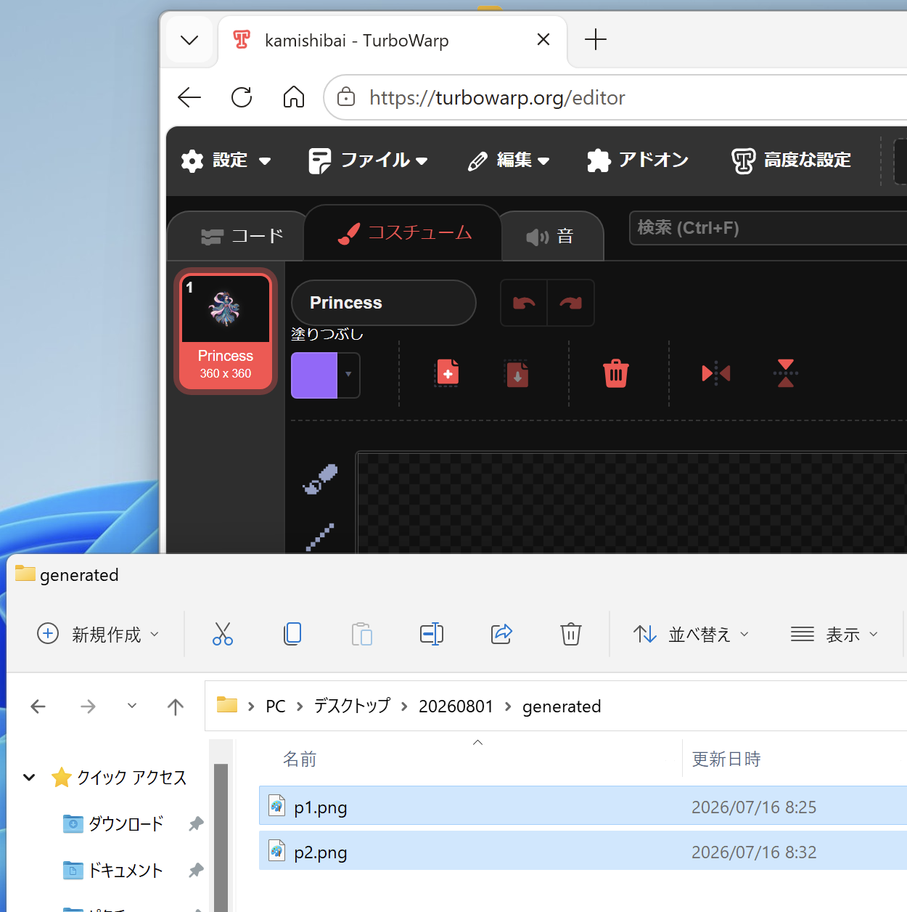
＜⭐️スクリーンショットを
ドラッグ＆ドロップ
3.4 描 いた絵を確認 する
「Princess」のスプライトの「コスチューム」として
あなたの
＜⭐️子どもがお
3.5 TurboWarpプロジェクトを保存 する
TurboWarp画面上部の「ファイル」メニューから「my-kamishibai.sb3に

4. 休憩 しよう

トイレに行っておきましょう。
水分
うまくいかないこと、わからないことがあれば、
5. ポーズを認識 するしくみを作ろう
ここからは、AIにポーズを
Teachable MachineのWebサイトを開き、Teachable Machineとは何か、どのような仕組みで動作しているのか、どのように
https://teachablemachine.withgoogle.com/
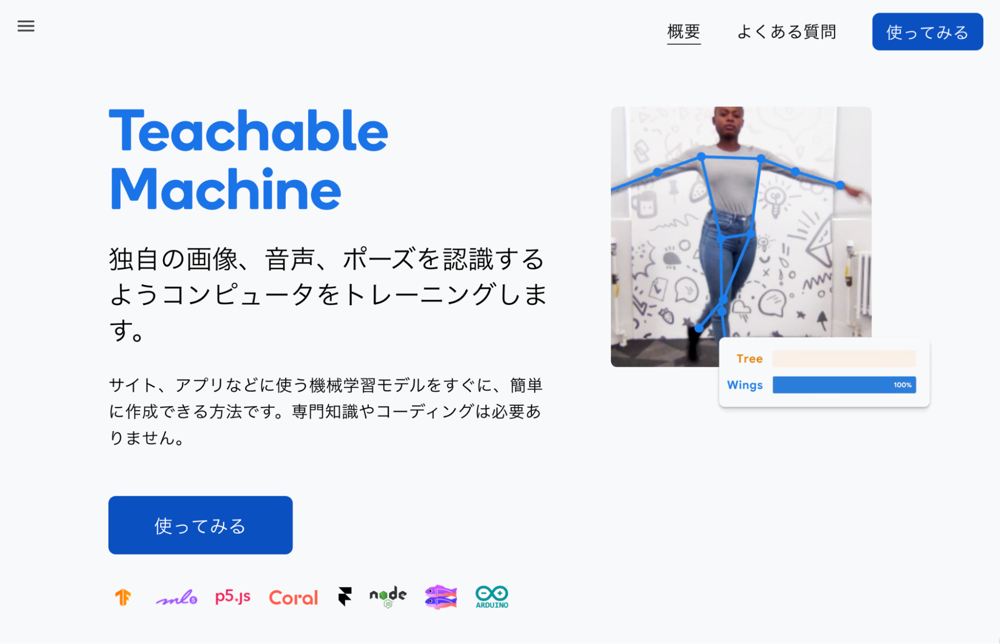
5.1 Teachable Machineで作業を開始する
5.1.1 Teachable Machineの「ポーズ」プロジェクトを開く
WebブラウザEdgeで、Teachable Machineの「ポーズ」の画面を開いてください。 https://teachablemachine.withgoogle.com/train/pose
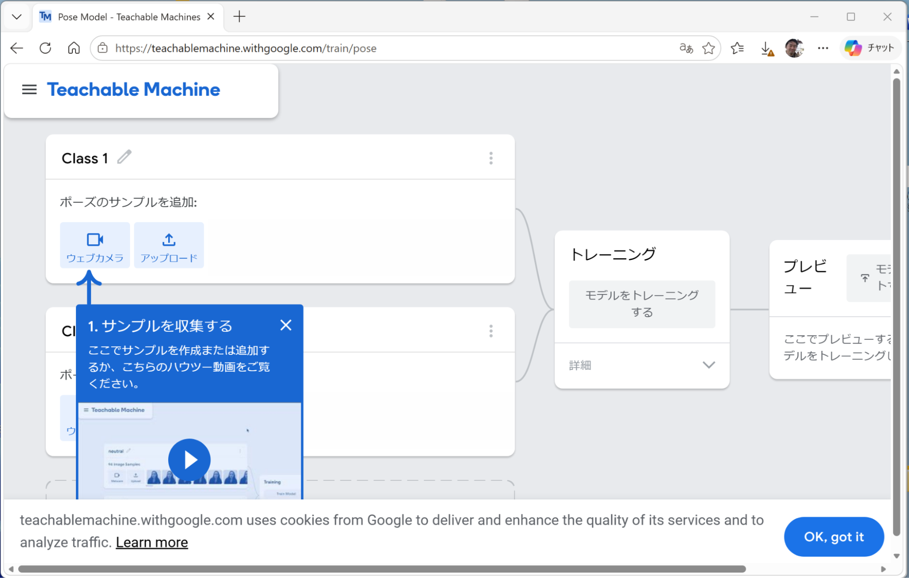
5.1.2 ウェブカメラの使用を許可 する
「ウェブカメラ」ボタンをクリックしてください。
Edgeがカメラ
5.2 クラスを用意する
Teachable Machineで、それぞれのポーズを表すための「クラス」を
ここでいう「クラス」とは、そのモデルにおいてポーズを
この
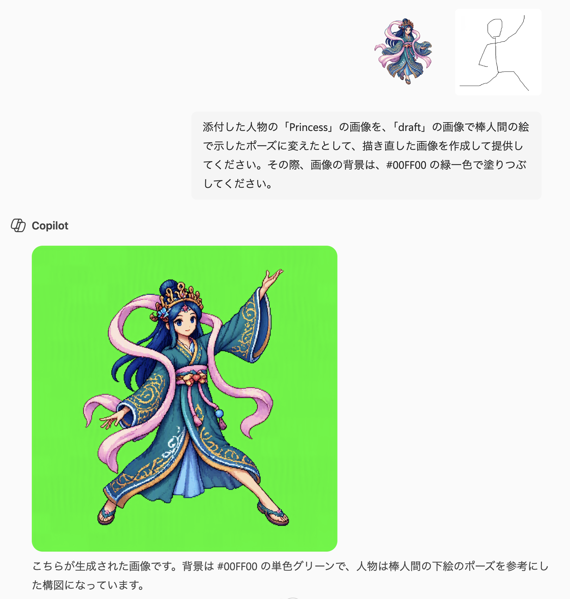

同様に、「Class 2」と書かれているものを「pose2」に
3つ
【ラベルは半角で。ここでは、pose 1のようにスペースを空けないように注意してください。】
5.3 ポーズを撮影 する
「ウェブカメラ」ボタンを
ウェブカメラの前で、ペアのうち1人(小学生)がポーズを取ってください。
ペアのうちもう1人(
ポーズの
1つのポーズごとに、
枚数 が1枚 など、ごく少ない場合には、ポーズを認識 するための材料 が不足 し、モデルのトレーニングがうまくいきません。ほとんど同じような写真ばかりでも、枚数 を増 やせたことにはなりません。逆 に、枚数 が多すぎると、トレーニングの処理 に時間がかかってしまいます。
【カメラの
＜⭐️ここにスクリーンショットと、
5.4 モデルをトレーニングする
「モデルをトレーニングする」のボタンをクリックし、しばらく待ってください（数分間）。
＜⭐️ここにスクリーンショットと、
5.5 プロジェクトをダウンロードする
モデルのトレーニングはうまくいきましたか？ うまくいったならば、あとで、ポーズの
ダウンロードフォルダの

5.6 モデルをクラウドにエクスポートする
「モデルをエクスポートする」のボタンをクリックしてください。
「アップロード（
「モデルをアップロード」ボタンをクリックしてください（数十秒待ちましょう）。
「
＜⭐️ここにスクリーンショットを入れる＞
6. 台本ファイルの修正 をしよう
6.1 台本ファイルの編集 を開始する
＜⭐️ここのmy-urashima.txtのスクリーンショットをバージョン3.1に
＜⭐️ここのスクリーンショットを日本語UIのものに
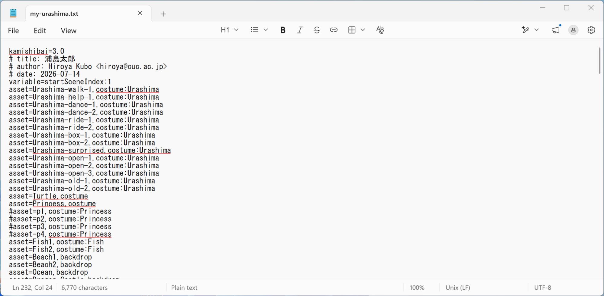
台本ファイルの中では、行ごとに、台本を
行の1文字目に記号「#」がつけられていると、その行の
my-urashima.txtファイルでは、さまざまな
my-urashima.txtファイルを
行が「---」という
6.2 モデルのURLを設定 する
AI
たとえば、シーン3「
それでは、これを、あなたが作った
| --- # scene 3 TMPoseURL=https://teachablemachine.withgoogle.com/models/… |
|---|
【
6.3 アセットを設定 する
ここでいう「アセット」とは、このAI
アセットを
my-urashima.txtファイルの22行目から25行目では、Scratchのスプライトで Princess という名前のものについてのコスチュームを、アセットとして
ここでは、22行目の
asset=p1,costume:Princess
| 意味 | |
|---|---|
| asset= | この行で「アセット」を |
| p1 | アセット名は「p1」であることを表します。 |
| , | 区切り文字「,」はアセット名には |
| costume: | アセットのアクセス先は「costume:」であることを表します。 |
| Princess | コスチュームを |
それではここで、あなたが
アセットの
【
| #asset=p1,costume:Princess #asset=p2,costume:Princess #asset=p3,costume:Princess #asset=p4,costume:Princess |
|---|
6.3.1 ポーズ2つを作成 した場合の設定
「p1」をアセット名として、Princessというスプライト名の「p1」という名前のコスチューム
「p2」をアセット名として、Princessというスプライト名の「p2」という名前のコスチューム
| asset=p1,costume:Princess asset=p2,costume:Princess #asset=p3,costume:Princess #asset=p4,costume:Princess |
|---|
6.3.2 ポーズ3つを作成 した場合の設定
「p1」をアセット名として、Princessというスプライト名の「p1」という名前のコスチューム
「p2」をアセット名として、Princessというスプライト名の「p2」という名前のコスチューム
「p3」をアセット名として、Princessというスプライト名の「p3」という名前のコスチューム
| asset=p1,costume:Princess asset=p2,costume:Princess asset=p3,costume:Princess #asset=p4,costume:Princess |
|---|
6.3.3 ポーズ4つを作成 した場合の設定
「p1」をアセット名として、Princessというスプライト名の「p1」という名前のコスチューム
「p2」をアセット名として、Princessというスプライト名の「p2」という名前のコスチューム
「p3」をアセット名として、Princessというスプライト名の「p3」という名前のコスチューム
「p4」をアセット名として、Princessというスプライト名の「p4」という名前のコスチューム
| asset=p1,costume:Princess asset=p2,costume:Princess asset=p3,costume:Princess asset=p4,costume:Princess |
|---|
6.4 アクターのポーズを設定 する
ここでいう「アクター」とは、このAI
アクターは、「アクション」をすることができます。台本ファイルの中で行頭が「action=アクター名:」で始まる
ここでは、my-urashima.txtファイルの140行目で「Princess」という名前のアクターに、「pose」というアクションをさせる
action=Princess:pose:p1,p2,p1,p2:pose1,pose2,pose1,pose2:Drum Funky,Drum Funky,Drum Funky,...
| 意味 | |
|---|---|
| action= | この行は「アクション」を |
| Princess: | この行はアクター名「Princess」の「アクターアクション」であることを |
| pose: | この行はアクターアクション「pose」を |
| p1,p2,p1,p2 | アセット名「p1」「p2」「p1」「p2」の |
| pose1,pose2,pose1,pose2 | Teachable Machineのポーズのクラス名（ポーズ名）をカンマ区切りで |
| Drum Funky,Drum Funky,Drum Funky,Drum Funk | アセット名「Drum Funky」「Drum Funky」「Drum Funky」「Drum Funky」の |
それでは、my-urashima.txtファイルの140行目-142行目の3行のうちで、
【
| #action=Princess:pose:p1,p2,p1,p2:pose1,pose2,pose1,pose2:Drum Funky,Drum Funky,Drum Funky,... #action=Princess:pose:p1,p2,p3,p1,p2,p3:pose1,pose2,pose3,pose1,pose2,pose3:Drum Funky,Drum Funky,... #action=Princess:pose:p1,p2,p3,p4,p1,p2,p3,p4:pose1,pose2,pose3,pose4,pose1,pose2,pose3,pose4:Drum... |
|---|
6.4.1 ポーズ2つを作成 した場合の設定
3行のうち1行目、アセット名部分に「p1」「p2」が書かれている行の行頭の#記号を
| action=Princess:pose:p1,p2,p1,p2:pose1,pose2,pose1,pose2:Drum Funky,Drum Funky,Drum Funky,... #action=Princess:pose:p1,p2,p3,p1,p2,p3:pose1,pose2,pose3,pose1,pose2,pose3:Drum Funky,Drum Funky,... #action=Princess:pose:p1,p2,p3,p4,p1,p2,p3,p4:pose1,pose2,pose3,pose4,pose1,pose2,pose3,pose4:Drum... |
|---|
6.4.2 ポーズ3つを作成 した場合の設定
3行のうち2行目、アセット名部分に「p1」「p2」「p3」が書かれている行の行頭の#記号を
| #action=Princess:pose:p1,p2,p1,p2:pose1,pose2,pose1,pose2:Drum Funky,Drum Funky,Drum Funky,... action=Princess:pose:p1,p2,p3,p1,p2,p3:pose1,pose2,pose3,pose1,pose2,pose3:Drum Funky,Drum Funky,... #action=Princess:pose:p1,p2,p3,p4,p1,p2,p3,p4:pose1,pose2,pose3,pose4,pose1,pose2,pose3,pose4:Drum... |
|---|
6.4.3 ポーズ4つを作成 した場合の設定
3行のうち3行目、アセット名部分に「p1」「p2」「p3」「p4」が書かれている行の行頭の#記号を
| #action=Princess:pose:p1,p2,p1,p2:pose1,pose2,pose1,pose2:Drum Funky,Drum Funky,Drum Funky,... #action=Princess:pose:p1,p2,p3,p1,p2,p3:pose1,pose2,pose3,pose1,pose2,pose3:Drum Funky,Drum Funky,... action=Princess:pose:p1,p2,p3,p4,p1,p2,p3,p4:pose1,pose2,pose3,pose4,pose1,pose2,pose3,pose4:Drum... |
|---|
6.5 台本ファイルを保存 する
メニューから、「ファイル」→「
＜⭐️ここのスクリーンショットを日本語UIのものに

7. 動作確認 しよう
7.1 緑の旗 を押 して開始する
Edgeで https://turbowarp.org/editor を開いているタブを
画面右上の、緑の

7.2 台本ファイルを開く
- アプリ実行が開始されたら、タイトル画面をクリックして次へ進んでください。
- 「ファイルをひらく」をクリックするとファイル
選択 画面が開きます。 - my-urashima.txtファイルを
選択 して読 み込 んでください。 - 物語がスタートします。
7.3 早送りする
スペースキーや右
7.4 ポーズを認識 させて物語を進める
ダンスのポーズに
8. みんなでプレイしよう
近くの

9. まとめ
今日の
□ AIに絵を
□ AIにポーズを
□ プログラムを
□ 自分だけの
これからも、もっといろいろなことにチャレンジしてください！
A. 付録 1: 体験 会運営 用資料
A.1 必要 機材 ・準備 するもの
A.1.1 大学側
-
PC 親子ペアごとに2台(325教室
設置 ) -
A4用紙 親子ペアごとに4
枚 （325教室プリンタから抜 き取 りで当日用意） -
可 搬式クロマキー背景 （長尾 先生管轄 ） -
USBカメラ親子ペアごとに2
個 （総合 政策 学部管理 品、久保 管轄 ） -
ヘッドフォン 親子ペアごとに2
個 （国際 教養 学部管理 品、久保 管轄 ） -
配布 資料 フォルダを圧縮 したファイル（要 対応 、久保 管轄 ） -
全国
選抜 小学生プログラミング大会チラシ（千葉日報 管轄 ）
A.1.2 参加 者側
- 筆記用具（ペン・
鉛筆 消しゴム） - USBメモリ（作品持ち帰り用、
任意 ）
A.2 会場見取り図
「3号館3F 325教室」
カメラの死角となるはずの場所に、😃マークで教員2名+学生スタッフ5名=7名分の立ち
この場所ならば、ポーズ
あわせて、😃マークのところに、それぞれが
A.3 事前準備 内容
- USBカメラをPCに
接続 - ヘッドフォンをPCに
接続 - PC
電源 投入 - ログオン（ゲストアカウント）
- ログオンができたらEdgeを起動
- EdgeにURLを手入力して
配布 資料 フォルダのzipのダウンロード - ダウンロードが
完了 したら圧縮 展開 しデスクトップに配置 - Edgeで
教材 ページ画面を開いておく - Edgeの
別 タブでM365 Copilotの画面を開いてサインインしておく(ゲストアカウント）
A.4 配布 資料 フォルダの内容
- draft (
棒 人間画像 、配布 資料 としては白紙の画像 )- pose1.png
- pose2.png
- pose3.png
- pose4.png
- master (立ち絵画
像 )- Urashima.png
- Princess.png
- generated (
生成 画像 )- （ファイルなし）
- generated-sample (
生成 画像 サンプル)- p1.png
- p2.png
- p3.png
- p4.png
- TMPose (Teaching Machineプロジェクトファイル)
- (ファイルなし)
- kamishibai.sb3
- urashima.txt
- my-urashima.txt
- workshop-20260801.pdf (このドキュメントから
付録 を除 いてPDF化したもの)
A.5 タイムテーブル
- 7:55 325教室前にスタッフ全員が集合
- 7:55-8:00 軽く打ち合わせ
- 8:00-8:15
準備 を15分程度 で完了 - 8:15-9:15 1時間をかけてスタッフ
研修 - 9:15-9:30 客入れ
準備 、スタッフはトイレなどを済 ませておく - 9:30
受付 ・客入れ開始 - 10:00
体験 会開始（途中 で10分間の休憩 を入れる） - 11:50
体験 会終了 、アンケート記入・回収 - 12:00ごろ 客出し
- 12:10-12:30 教室の
片付 け - 12:30 スタッフ
解散
A.6 M365 Copilotのトラブルシューティング
M365 Copilotを
また、
そうしたときには、ゲストアカウントのCopilotではなく、スタッフの
B. 付録 2: アプリ
B.1 「参加 型 」AI紙芝居 アプリ
「
- tmpose-kamishibai: アプリ本体・ドキュメント・サンプル
C. 付録 3: ライブラリなど
tmpose-kamishibaiの動作
C.1 Viteプラグイン
- vite-plugin-turbowarp-extension: A Vite plugin for building TypeScript projects as single-file TurboWarp extensions.
C.2 TurboWarp 機能 拡張 開発用テンプレート
- turbowarp-extension-template: A reusable TypeScript template for developing, testing, building, and releasing TurboWarp extensions with Vite.
C.3 TurboWarp 機能 拡張
- tmpose.js: A TurboWarp extension for camera-based pose recognition using Teachable Machine Pose models.
- text-lines.js: A TurboWarp extension for counting, reading, and splitting text by lines.
- asset-manager.js: An IndexedDB-backed image and audio asset manager for TurboWarp projects. It can also register costumes, stage backdrops, and sounds already stored in the current .sb3 project.
- async-input.js: A target-scoped asynchronous keyboard, pointer, and accumulated pose input extension for TurboWarp Temporary Variables.
- runtime-expression.js: A safe JavaScript-like condition evaluator and conditional broadcast monitor for TurboWarp Temporary Variables runtime variables.